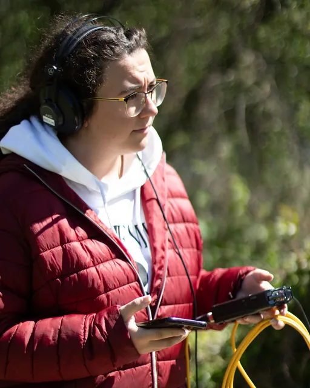
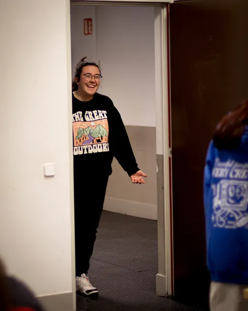
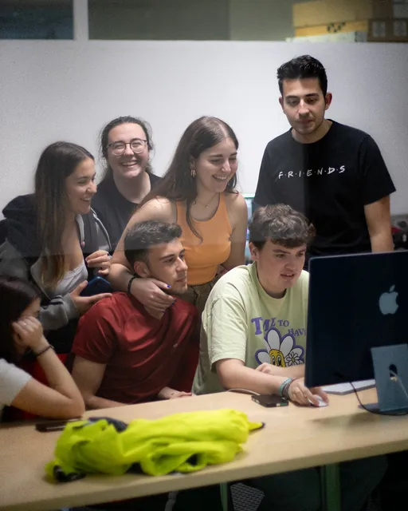

Contando historias a través de la imagen y el sonido.
Creativa audiovisual y periodista. Pasión por el cine, la radio y los proyectos con enfoque social.
Ver mis proyectosDetrás de la lente y el micro
Mi camino en el mundo de la comunicación comenzó con la proyección de una película en clase: Invictus. Lo que empezó como una curiosidad cinéfila tras descubrir el poder de una historia bien contada, terminó convirtiéndose en mi vocación y en un doble grado en Comunicación Audiovisual y Periodismo.
Mi perfil se ha moldeado a través de la curiosidad y el terreno: desde la intimidad de la radio universitaria, donde aprendí el valor de la voz, hasta la redacción de un periódico local, donde curtí mi capacidad de análisis y escritura. Sin embargo, mi mirada más auténtica la desarrollé fuera de las aulas, capturando la esencia de mis 18 años como Scout a través de la fotografía; una experiencia que me enseñó a valorar lo humano y lo espontáneo.
En el set de televisión descubrí la adrenalina de la regiduría y la precisión del directo, una energía que hoy traslado al mundo del marketing digital. En este último sector he aprendido a cerrar el círculo: planificar, editar y transformar una idea estratégica en una realidad visual que conecte con el cliente. Soy, en esencia, una comunicadora todoterreno que disfruta tanto del caos creativo de una idea como del rigor técnico necesario para hacerla brillar.
Perfil Profesional
Periodista y Comunicadora Audiovisual especializada en la creación de contenido estratégico y narrativas digitales. Cuento con una sólida experiencia adaptando mensajes complejos para audiencias diversas, desde organismos institucionales hasta el sector educativo. Soy experta en edición de vídeo y diseño sonoro, con formación especializada en el uso de Inteligencia Artificial para la optimización y generación de contenido innovador.
Durante mi etapa en Raíz Digital, potencié mis habilidades en postproducción integrando la IA para optimizar flujos de trabajo. En este periodo, colaboré con entidades como la Confederación Hidrográfica del Miño-Sil (CHMS), creando piezas informativas que equilibran el rigor institucional con un tono dinámico. Esta visión estratégica se trasladó también al ámbito educativo en la Academia Serás, donde desarrollé proyectos clave como la entrevista a la número uno de la promoción para su Open Day y clips de alto impacto con difusión en medios nacionales como Antena 3.
Mi trayectoria incluye la creación de la imagen visual del OUFF (Festival de Cine de Ourense), piezas para FITUR con Xeodestino, el diseño sonoro de podcasts para los Parques Naturais de Ourense y colaboraciones para la UNIR. En constante evolución, utilizo la tecnología como una herramienta clave para elevar la calidad y la eficiencia en cada proyecto.
Experiencia Anterior
Redactora Local
La Gaceta de Salamanca
Becaria del Departamento de Radio
Universidad Pontificia de Salamanca
Mis Proyectos
Una selección de mis trabajos en audiovisual y redacción.
Ver y Descargar CVDetrás de las cámaras
Un pequeño vistazo a mis rodajes, coberturas y trabajo en equipo.



¿Hablamos?
Siempre abierta a nuevas oportunidades, colaboraciones o proyectos con enfoque social.